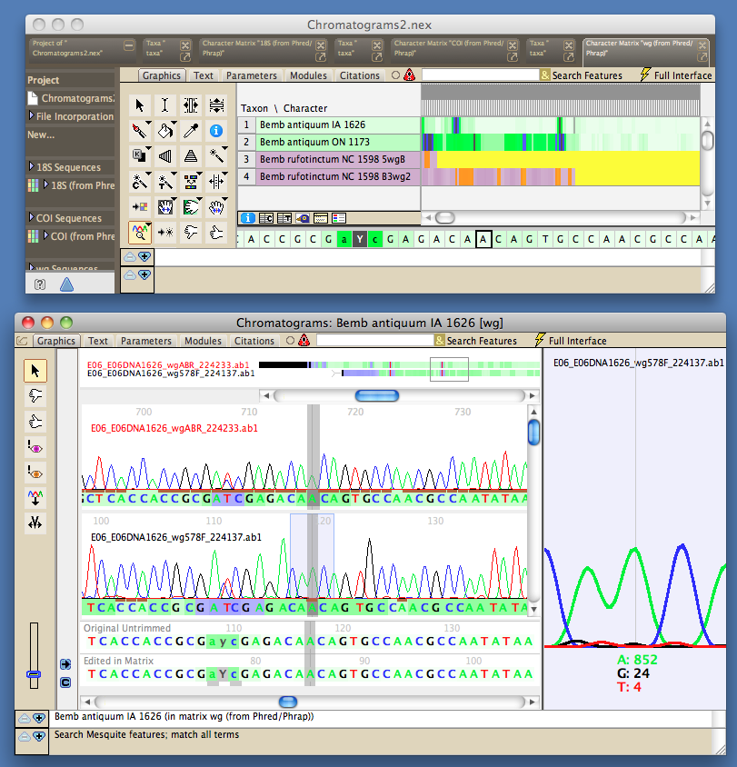

Chromaseq: a package for processing chromatograms and sequence data in Mesquite
Lead developers Code contributors |
|
The Chromaseq package integrates the processing of chromatograms within Mesquite. With Chromaseq installed, and the programs Phred and Phrap, you can:
- Organize a directory of chromatograms into subdirectories corresponding to genes and samples
- Assemble them into contigs (with the help of Phred and Phrap)
- Import the contig sequences into Mesquite, and have Chromaseq automatically trim them, adjust base calls as appropriate, etc.
- View the chromatograms for each sequence by touching a special tool on that sequence in Mesquite's matrix editor
- Edit the base calls in a chromatogram viewer
In addition, there are a few other tools in Chromaseq that aid with GenBank submission, chromatogram organization, and data visualization.
Chromaseq version 1.5 requires Mesquite 3.6 or later, as well as Phred and Phrap.

The following sections provide introductory information about Chromaseq:
- Overview gives a one-page tour of some of the features of Chromaseq, with images.
- Quickstart is a condensed guide to using Chromaseq, with many details missing, but if you really can't stand to read manuals, this is a good place to start.
- The Tutorial leads you through the use of Chromaseq.
- The Installation section describes how to install Chromaseq, Phred and Phrap, and the Preparation & Processing section leads you through processing chroma. It also describes Mesquite's tools for modifying the output of Phred and Phrap and import the consensus sequences into Mesquite.
- You may also wish to sign up for the Chromaseq e-mail list.
- Viewing chromatograms in contigs and calling bases can be done in the Chromatogram Viewer
- A brief mention of how Chromaseq compares to other programs, and how they might interact, is on the Chromaseq & Other Programs page. You might also wish to look at the limitations page.
- The Download page.
- Acknowledgements.
- How to cite Chromaseq.
- Frequently Asked Questions.
More information is available by clicking on the links at the left.